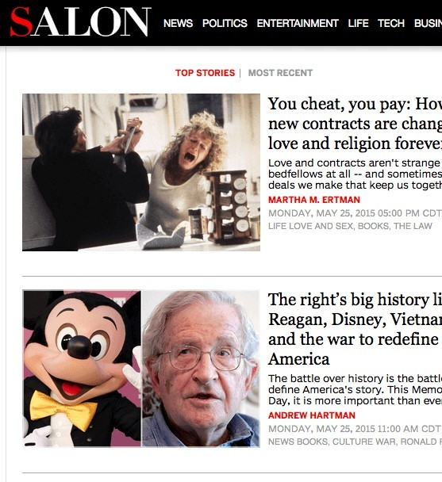
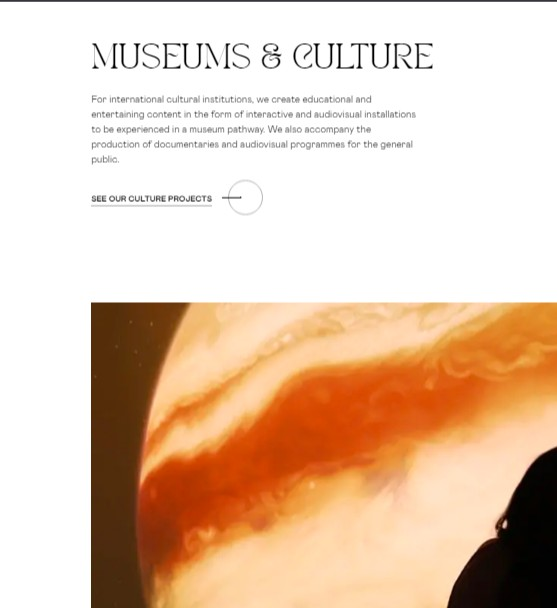

Proximity
Amazon
amazon.comThe priciple of proximity is well examplified here because the relationship between the book images and their descriptions, rates as well as their prices on the page and site is critical for conveying a message and purpose to the user.
Alignment
Salon
salon.com The principles of alignment is well examplified here because they desided the put the images at the left side and the description at the right and they align them vertically in order to create a sense of unity by providing structure and connecting them in a subtle way.
Visual Hierarchy
Femme Fatale
femmefatale.paris The principles of visual hierarchy is well examplified here because the arrange the components in descending order of importance they accomplish it using typography, whitespace, contrast and image in order to provide a focal point to indicate to visitors where the most critical information is located.